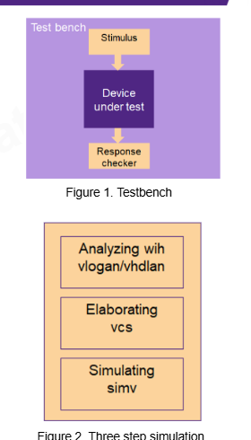

Ideia central
Este laboratório não é só uma coleção de circuitos pequenos. Ele é um treino de fluxo.
Você aprende a pegar um par DUT + testbench, dizer ao simulador quais arquivos
entram, elaborar o topo correto, executar a simulação e interpretar o resultado.
escolher exemplo -> ajustar filelist -> analisar VHDL -> elaborar testbench -> simular -> checar -> depurarMapa da pasta
A raiz do lab tem poucos arquivos, mas cada um representa uma função comum em ambientes maiores. Entender isso agora ajuda muito quando aparecerem makefiles no ambiente do professor.
| Arquivo/pasta | Função prática | Como pensar |
|---|---|---|
README | Explica requisitos e comandos básicos. | É o roteiro humano do lab. |
setup.csh | Prepara variáveis e paths das ferramentas. | É a porta de entrada para VCS/Verdi no servidor. |
.testscript | Confere integridade e versão das ferramentas. | É um teste de sanidade do pacote. |
src.f | Lista os arquivos VHDL que entram na simulação. | É a filelist do exemplo ativo. |
run.sim | Comandos enviados ao simulador durante a execução. | É o roteiro automático do simv. |
synopsys_sim.setup | Configuração de bibliotecas do simulador. | Ajuda o VCS a encontrar/usar bibliotecas VHDL. |
lab/ | Contém os DUTs e seus testbenches. | É onde está o conteúdo técnico do laboratório. |
Cuidado com o setup.csh
O arquivo do pacote mostra paths de exemplo para versões Synopsys. Na UFRGS, esses caminhos
podem ser diferentes. Então use o arquivo como modelo conceitual, não como verdade absoluta:
ele ensina que você precisa colocar vcs, vhdlan e verdi
no ambiente antes de rodar o lab.
O papel do src.f
O src.f atual aponta para o exemplo do multiplexador:
mux8x1_tb.vhd
mux8x1.vhdIsso parece simples, mas é uma ideia central de fluxo RTL: em vez de digitar uma lista enorme de arquivos no terminal, você guarda a lista em um arquivo versionável. Em projetos reais, a filelist vira parte da infraestrutura do projeto.
A ordem também importa. Em VHDL, o simulador precisa conhecer declarações antes de elaborar hierarquias que dependem delas. Para exemplos pequenos, a ordem pode passar despercebida; em projetos maiores, uma filelist mal organizada vira erro de compilação.
Fluxo Synopsys do lab
O README mostra o fluxo em três comandos. A forma exata pode variar, mas o modelo mental é este:
vhdlan lê VHDL, compila unidades e encontra erros de linguagem.
vcs monta a hierarquia a partir do top de simulação.
simv roda a simulação e produz log/dump/wave.
vhdlan adder.vhd adder_tb.vhd -kdb
vcs adder_tb -kdb -debug_access
./simv -ucli -i run.sim
vhdlan responde: "os arquivos VHDL fazem sentido para o compilador?".
vcs responde: "existe uma hierarquia executável a partir desse testbench?".
simv responde: "o comportamento ao longo do tempo é o esperado?".

O que o run.sim faz?
dump -add /
run 500ns
qEsses comandos pedem para adicionar sinais ao dump, rodar 500 ns e sair. Isso automatiza uma sessão que você poderia fazer manualmente. Em um makefile, esse arquivo seria chamado por uma regra de simulação.
Exemplo guiado: mux8x1
O exemplo padrão do lab é um mux 8:1. A interface é pequena e por isso é ótima para treinar leitura RTL sem se perder:
i : in STD_LOGIC_VECTOR (7 downto 0);
s : in STD_LOGIC_VECTOR (2 downto 0);
f : out STD_LOGIC;
Em hardware, isso significa: oito possíveis entradas de 1 bit, um seletor de 3 bits e uma saída.
O seletor escolhe qual bit de i aparece em f.
when "000" => f <= i(0);
when "001" => f <= i(1);
when "010" => f <= i(2);
...
when others => f <= i(7);
Didaticamente, este é um bom mux porque o mapeamento fica explícito. A cláusula
others também fecha a atribuição de saída e evita deixar o sinal sem definição.
Exemplo guiado: adder_32
O somador de 32 bits ensina uma regra que aparece o tempo todo em RTL: largura de sinal é parte do projeto. Se você soma dois operandos de 32 bits e ainda considera carry-in, o resultado completo precisa de 33 bits.
signal ca_sum : std_logic_vector(32 downto 0);O design calcula em uma largura interna maior e depois separa saída e carry:
adder_out <= ca_sum(31 downto 0);
carry_out <= ca_sum(32);Essa escolha evita perder informação. Um erro comum em RTL iniciante é fazer a soma diretamente na largura da saída e só depois tentar descobrir se houve carry. Quando a largura já truncou, a informação pode ter sumido.
Como estudar esse exemplo na waveform
Procure casos em que a soma ultrapassa 0xffffffff. Nesses momentos,
adder_out mostra os 32 bits baixos e carry_out deve indicar o bit
extra. Não olhe apenas o valor da saída; olhe também a combinação saída + carry.
Exemplo guiado: arbiter
O arbiter é o exemplo mais parecido com controle real. Enquanto mux e adder são combinacionais, o arbiter envolve estado, pedidos e concessões. Ele treina leitura de FSM.
type state_type is (init_state, client1, client2);
signal nxt_state, pre_state : state_type;Ao ler uma FSM, procure três coisas: o processo sequencial que registra o estado, a lógica combinacional que decide o próximo estado e a lógica de saída que gera os grants.
Roteiro dos designs
O lab tem dez pares principais. Em vez de estudar tudo como lista seca, use a tabela como uma trilha de dificuldade:
| Exemplo | Conceito que treina | Melhor pergunta de estudo |
|---|---|---|
mux8x1 | Mux combinacional | A saída cobre todos os seletores? |
demux1x8 | Distribuição combinacional | Somente uma saída ativa por seleção? |
encoder4x2 | Codificação | O que acontece se duas entradas estão ativas? |
decoder2x4 | Decodificação/one-hot | O one-hot é completo? |
adder_32 | Aritmética e carry | A largura interna preserva overflow? |
multiplier | Produto e largura | O resultado tem largura suficiente? |
counter | Sequencial, clock, overflow | Quando a flag muda? |
updowncounter | Controle de direção | A troca subir/descer é bem definida? |
arbiter | FSM e prioridade | Requests simultâneos são resolvidos corretamente? |
matrixmult | Aritmética composta | Há risco de largura insuficiente nos produtos? |
Limite dos testbenches do lab
A leitura dos arquivos mostra que muitos testbenches são bons para demonstração, mas ainda
simples: eles aplicam estímulos com wait e ajudam a observar a resposta, porém nem
sempre usam assert para declarar sucesso ou falha.
testbench demonstrativo:
aplica estímulos
deixa você observar a waveform
testbench self-checking:
aplica estímulos
calcula o esperado
compara automaticamente
imprime falha quando há divergênciaPara prova e projeto, essa diferença é muito importante. Simular não é o mesmo que verificar. Uma simulação que roda até o fim sem erro de ferramenta ainda pode estar testando pouco.
Ligação com makefile
O professor insiste em makefile porque ele automatiza exatamente o que este lab faz manualmente. Um makefile bem feito vira um painel de comandos reproduzíveis:
make sim -> compila/elabora/executa simulação
make waves -> abre Verdi com dump correto
make clean -> remove arquivos gerados
make test -> roda uma regressão pequenaO conteúdo técnico continua sendo RTL e testbench, mas o makefile evita que cada execução dependa de memória ou digitação manual. Esse é o elo entre o lab Synopsys e o ambiente novo do professor.
Roteiro de estudo recomendado
- Leia o
READMEe identifique a versão de VCS/Verdi esperada. - Abra o
src.fe confirme qual exemplo está ativo. - Abra o
*_tb.vhde confirme a entity top do testbench. - Rode o exemplo padrão do mux no servidor, se o ambiente estiver configurado.
- Abra a waveform e confira seletor, entrada e saída.
- Troque para
adder_32e observe saída + carry. - Troque para
arbitere desenhe a FSM em papel. - Escolha um exemplo e adicione um
assertsimples. - Depois disso, volte ao ambiente do professor e procure onde esse fluxo foi automatizado.
Perguntas para fixar
src.f, porque ele lista os arquivos VHDL que entram no fluxo.
Porque o testbench instancia o DUT e gera estímulos. O DUT sozinho não cria cenário de simulação.
Rodar é executar o tempo. Verificar é comparar comportamento observado com comportamento esperado.
Para preservar o carry-out da soma de operandos de 32 bits com carry-in.
Base Markdown: aula didática, guia passo a passo, mapa dos arquivos.